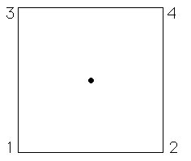
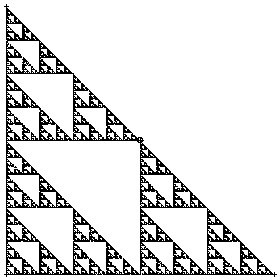

The Chaos Game is played by specifying a number of vertices \((a_1, b_1), (a_2, b_2), \ldots, (a_N, b_N)\) and a scaling factor \(r < 1\). To play the game, start with the point \((x_0, y_0) = (1/2, 1/2)\) and pick one of the vertices, say \((a_i, b_i)\), randomly. The point \((x_1, y_1)\) is the fraction \(r\) of the distance between \((a_i, b_i)\) and \((x_0, y_0)\), that is \( (x_1, x_1) = r(x_0, y_0) + (1 - r)(a_i, b_i) \)
Pick another vertex \((a_j, b_j)\) randomly. The point \((x_2, y_2)\) is given by \( (x_2, x_2) = r(x_1, y_1) + (1 - r)(a_j, b_j) \) and so on. For example, take four vertices, \( (a_3, b_3) = (0, 1), (a_4, b_4) = (1, 1) \) \( (a_1, b_1) = (0, 0), (a_2, b_2) = (1, 0), \) the corners of the unit square, and take \(r = 1/2\)

Here are the first five points generated by this run of the chaos game. This should be plausible: start with a point inside the unit square, and each move is half-way between where we are and a corner of the square. Because the corners are selected randomly, no part of the square is preferred over any other. So since some parts of the square fill in, all parts must fill in
What would happen if just use three vertices \((a_1, b_1), (a_2, b_2),\) and \((a_3, b_3)\)?

Start with a point in the triangle. Each move is half-way between where we are and a corner of the triangle, so we never leave the triangle. Because we select the corners randomly, no part of the triangle is preferred over any other. So since some parts of the triangle fill in, all parts must fill in
1The Chaos Game. Michael Frame. 2004.
https://www.math.union.edu/~framem/AprilWorkshop/ChaosGame/ChaosGame.html